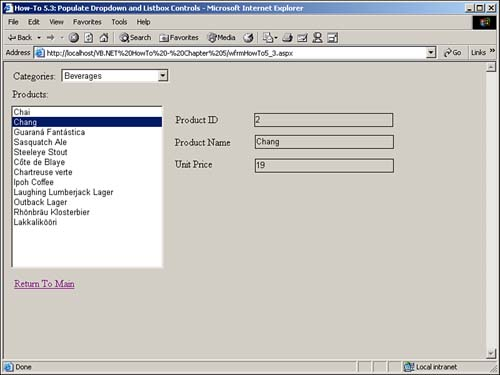

Note
You can use a property called DataFormatString to format the DataTextField data for display in the ListBox or DropDown controls. |
I saw in this chapter's first How-To how to bind a ListBox control to a dataset that was created in the design. How do I populate DropDown and ListBox controls on a Web Form using code at runtime?
ListBoxes and DropDowns, which are equivalent to ComboBoxes on Windows Forms, have different properties that are used for data binding than their Windows counterparts. Besides these properties, displayed in Table 5.4, you also need to use the Databind method and session object to track the data table that is created for products.
|
Property |
Description |
|---|---|
|
DataTextField |
Column in data source to use for displaying in the DropDown or ListBox control. |
|
DataValueField |
Column in data source that is the lookup value. |
Note
You can use a property called DataFormatString to format the DataTextField data for display in the ListBox or DropDown controls. |
Open and run the Visual Basic .NET-Chapter 5 solution. From the main page, click on the hyperlink with the caption How-To 5.3: Populate DropDown and ListBox controls. When the Web Form loads, you will see a Categories dropdown with the Beverages category selected and the products for that category in the list box with the label Products. If you click on a product, the three text boxes are loaded on the right of the page (see Figure 5.3).
Create a Web Form. Then place the controls listed in Table 5.5 and seen in Figure 5.3 with the following properties set.
|
Object |
Property |
Setting |
|---|---|---|
|
Label |
Text |
Categories: |
|
DropDown |
ID |
ddCategories |
|
AutoPostBack |
True |
|
|
Label |
Text |
Products: |
|
ListBox |
ID |
lstProducts |
|
AutoPostBack |
True |
|
|
Label |
Text |
Product ID |
|
Label |
Text |
Product Name |
|
Label |
Text |
Unit Price |
|
TextBox |
ID |
txtProductID |
|
BackColor |
Transparent |
|
|
TextBox |
ID |
txtProductName |
|
BackColor |
Transparent |
|
|
TextBox |
ID |
txtUnitPrice |
|
BackColor |
Transparent |
|
|
HyperLink |
ID |
hplReturnToMain |
|
NavigateURL |
wfrmMain.aspx |
As with some of the other chapters' projects, a support routine needs to be built to create the Connection string. Called BuildCnnStr, the function can been seen in Listing 5.5. This function takes a server and database name passed to it and creates a connection string.
Function BuildCnnStr(ByVal strServer As String, ByVal strDatabase As String) As String
Dim strTemp As String
strTemp = "Provider=SQLOleDB; Data Source=" & strServer & ";"
strTemp &= "Initial Catalog=" & strDatabase & ";"
strTemp &= "Integrated Security=SSPI"
Return strTemp
End Function
Although you could create a routine that would pass back a Connection object, a more versatile method would be to pass back a string. The reason for this is that for some objects, you are asked for a Connection object, but for others, you are asked for just a string.
In the class module for the Web Form, add the following Private declaration just below the line of code that reads Web Form Designer Generated Code.
Private mdtProducts As New DataTable()
This line of code declares a DataTable object that you will use throughout the Web Form. However, in addition to using this variable, you will use the Session object to retain the data between round trips to the server.
Add the code in Listing 5.6 to the Load event of the page. This code creates a DataAdapter object and then fills the dtCategories DataTable object. The ddCategories DropDown control is bound to dtCategories. The LoadProducts routine is called to load the products into the lstProducts ListBox control, which is described in the next step. Finally, the Session object is checked to see if the item MyProductsTable has been saved to it, and if so, it is loaded back into the mdtProducts variable.
Private Sub Page_Load(ByVal sender As System.Object,
ByVal e As System.EventArgs) Handles MyBase.Load
'Put user code to initialize the page here
If Not Me.IsPostBack Then
Dim dtCategories As New DataTable()
Dim odaCategories As _
New OleDb.OleDbDataAdapter( _
"Select CategoryID, CategoryName From Categories",
BuildCnnStr("(local)", "Northwind"))
'-- Fill the data table
odaCategories.Fill(dtCategories)
'-- Assign the properties and bind the dropdown.
ddCategories.DataValueField = "CategoryID"
ddCategories.DataTextField = "CategoryName"
ddCategories.DataSource = dtCategories
ddCategories.DataBind()
LoadProducts()
End If
'-- Load the products data table back from the session variable
If Not (Session("MyProductsTable") Is Nothing) Then
mdtProducts = CType(Session("MyProductsTable"), DataTable)
End If
End Sub
In the class module for the page, create the LoadProducts routine that is displayed in Listing 5.7. This code looks similar to other routines that generate a DataTable object and then assign the properties to bind mdtProducts to the lstProducts ListBox control. mdtProducts is then added to the Session object for round trips to the server.
Private Sub LoadProducts()
Dim odaProducts As New OleDb.OleDbDataAdapter( _
"Select * From Products Where CategoryID = "
& ddCategories.SelectedItem.Value, _
BuildCnnStr("(local)", "Northwind"))
mdtProducts.Clear()
odaProducts.Fill(mdtProducts)
'-- Assign the properties and bind the list box.
lstProducts.DataValueField = "ProductID"
lstProducts.DataTextField = "ProductName"
lstProducts.DataSource = mdtProducts
lstProducts.DataBind()
'-- Save the data table out to a session variable for round trips
Session.Item("MyProductsTable") = mdtProducts
End Sub
Add the code in Listing 5.8 to the SelectedIndexChanged event off the ddCategories DropDown control.
Private Sub ddCategories_SelectedIndexChanged(ByVal sender As Object,
ByVal e As System.EventArgs) _
Handles ddCategories.SelectedIndexChanged
LoadProducts()
End Sub
Add the code in Listing 5.7 to the SelectedIndexChanged event off of lstProducts. This code takes the SelectedIndex property of the lstProducts ListBox control and helps retrieve the row in the DataTable object. The individual columns are then loaded into the corresponding text boxes on the page.
Private Sub lstProducts_SelectedIndexChanged(ByVal sender As Object,
ByVal e As System.EventArgs) _
Handles lstProducts.SelectedIndexChanged
With mdtProducts.Rows(lstProducts.SelectedIndex)
txtProductID.Text = .Item("ProductID")
txtProductName.Text = .Item("ProductName")
txtUnitPrice.Text = .Item("UnitPrice")
End With
End Sub

One of the main items to note, besides the use of the Session variables, is the use of the ddCategorie.SelectedItem.Value and lstProducts.SelectedIndex. These are two ways to use items that are selected in the DropDown and ListBox objects, respectively.
After you have used the Session object to keep variables during round trips to the server, it becomes more intuitive as you use it.